ESCOLA POLITÉCNICA
CURSO DE ENGENHARIA DE SOFTWARE
ESCOLA POLITÉCNICA
CURSO DE ENGENHARIA DE SOFTWARE
RESUMO
O presente trabalho documenta o projeto, especificação arquitetural, prototipagem de alta fidelidade e plano de medição da plataforma HRTech Core, um sistema modular de Gestão Estratégica e Operacional de Recursos Humanos (People Analytics) concebido sob o paradigma de Linha de Produção de Software (LPS / Software Product Lines). As organizações contemporâneas compartilham rotinas corporativas essenciais (cadastro de colaboradores, organogramas, controle de jornada e concessão de férias), contudo apresentam requisitos profundamente divergentes em conformidade com seu setor produtivo. Para superar o dilema entre softwares genéricos inflexíveis e desenvolvimentos customizados isolados ("one-off"), o HRTech Core estabelece um núcleo comum reutilizável (*Core Assets*) articulado a mecanismos formais de resolução de alta variabilidade em tempo de execução via *Feature Flags* e arquitetura multi-tenant. O projeto integra métodos de Design Thinking (6 personas multifuncionais com mapas de empatia, público-alvo e storyboard de 14 interações), 15 Requisitos Funcionais comuns, 9 Requisitos Funcionais Variáveis para três segmentos econômicos (Tecnologia, Indústria e Financeiro), uma funcionalidade de cliente exclusivo (*Portal do Corretor* para o cliente FinCorp Seguros), 10 Requisitos Não Funcionais balizados por métricas e 6 Ativos Reutilizáveis catalogados com taxas de reuso superiores a 80%. A solução é materializada em um protótipo navegável Single Page Application (SPA) com 17 telas funcionais e instrumentada por indicadores quantitativos de produto, processo e reuso.
ABSTRACT
This paper presents the design, architectural specification, high-fidelity prototyping, and software measurement framework for HRTech Core, a modular Strategic and Operational Human Resources Management (People Analytics) platform engineered under the Software Product Line (SPL) paradigm. While modern organizations share foundational HR workflows (employee management, organizational hierarchy, time tracking, and vacation scheduling), their operational and compliance requirements diverge significantly across industry verticals. To overcome the trade-off between rigid commercial off-the-shelf software and costly ad-hoc custom development, HRTech Core establishes a reusable core platform (*Core Assets*) combined with runtime high-variability resolution mechanisms powered by feature flags and multi-tenant scoping. The engineering methodology encompasses Design Thinking artifacts (6 comprehensive personas with empathy maps, target audience segmentation, and a 14-step vacation request storyboard), 15 Core Functional Requirements, 9 Variable Functional Requirements tailored to three enterprise sectors (Technology, Manufacturing, and Financial/Insurance), a dedicated client-exclusive extension (*Broker Portal* for FinCorp Seguros), 10 metric-driven Non-Functional Requirements, and 6 Reusable Core Assets achieving reuse rates above 80%. The solution is validated through an interactive Single Page Application (SPA) prototype featuring 17 operational views integrated with quantitative software measurement indicators.
LISTA DE ILUSTRAÇÕES
- Figura 1 – Infográfico Conceitual de Público-Alvo e Segmentação da LPSp. 7
- Figura 2 – Visão de Interface do Público-Alvo e LPS no Protótipop. 8
- Figura 3 – Painel Visual Integrado do Storyboard de Solicitação de Fériasp. 9
- Figura 4 – Interface da Linha do Tempo do Storyboard no Protótipop. 11
- Figura 5 – Persona 1: Mariana Santos (Diretora de RH & Operations)p. 12
- Figura 6 – Persona 2: Roberto Lima (Analista de Departamento Pessoal)p. 14
- Figura 7 – Persona 3: Carlos Eduardo (Gerente de Engenharia)p. 15
- Figura 8 – Persona 4: Lucas Silva (Desenvolvedor Remoto)p. 17
- Figura 9 – Persona 5: João Oliveira (Operador de Fábrica)p. 18
- Figura 10 – Persona 6: Ana Souza (Recrutadora & Talent Acquisition)p. 20
- Figura 11 – Tela 01: Login & Autenticação Multi-tenantp. 21
- Figura 12 – Tela 02: Dashboard do Colaboradorp. 22
- Figura 13 – Tela 03: Dashboard Executivo do RH & Indicadores LPSp. 23
- Figura 14 – Tela 04: Lista de Colaboradores (CRUD)p. 24
- Figura 15 – Tela 05: Formulário de Cadastro / Edição Adaptativop. 25
- Figura 16 – Tela 06: Detalhes do Colaborador (Perfil 360°)p. 26
- Figura 17 – Tela 07: Organograma Corporativo Interativo (AR02)p. 27
- Figura 18 – Tela 08: Espelho de Ponto & Banco de Horas (AR03)p. 28
- Figura 19 – Tela 09: Solicitação de Ajuste de Ponto e Justificativap. 29
- Figura 20 – Tela 10: Gestão de Férias & Calendário de Ausênciasp. 30
- Figura 21 – Tela 11: Central de Aprovações do Gestor com Auditoriap. 31
- Figura 22 – Tela 12: Gestão Paramétrica de Benefícios Corporativosp. 32
- Figura 23 – Tela 13: Desempenho & Metas OKRs (Segmento Tech)p. 33
- Figura 24 – Tela 14: Módulo Industrial — EPIs e Exames ASOp. 34
- Figura 25 – Tela 15: Configuração da Empresa & Matriz de Governança LPSp. 35
- Figura 26 – Tela 16: Compliance & Auditoria em Dupla Custódiap. 36
- Figura 27 – Tela 17: Portal do Corretor de Seguros (Cliente Exclusivo)p. 37
LISTA DE TABELAS E QUADROS
- Quadro 1 – Matriz de Atendimento aos Requisitos da Disciplinap. 6
- Quadro 2 – Mapeamento das 14 Etapas Sequenciais do Storyboard de Fériasp. 10
- Quadro 3 – Mapa de Empatia da Persona 1: Mariana Santosp. 13
- Quadro 4 – Mapa de Empatia da Persona 2: Roberto Limap. 14
- Quadro 5 – Mapa de Empatia da Persona 3: Carlos Eduardop. 16
- Quadro 6 – Mapa de Empatia da Persona 4: Lucas Silvap. 17
- Quadro 7 – Mapa de Empatia da Persona 5: João Oliveirap. 19
- Quadro 8 – Mapa de Empatia da Persona 6: Ana Souzap. 20
- Quadro 9 – Catálogo Geral das 17 Telas do Protótipo HRTech Corep. 21
- Quadro 10 – Especificação dos 6 Ativos Reutilizáveis (Core Assets da LPS)p. 39
- Quadro 11 – Requisitos Funcionais Comuns (15 RFs) da Plataforma Basep. 40
- Quadro 12 – Requisitos Funcionais Variáveis (9 RFVs) por Segmento e Clientep. 41
- Quadro 13 – Requisitos Não Funcionais (10 RNFs) e Metodologia de Mediçãop. 42
- Quadro 14 – Catálogo de Regras de Negócio (RB01 a RB10)p. 43
- Quadro 15 – Matriz de Casos de Uso Prioritários do MVP (UC01 a UC10)p. 44
- Tabela 1 – Indicadores e Métricas Coletadas no HRTech Corep. 45
- Quadro 16 – Matriz Comparativa dos Três Segmentos/Tenants da LPSp. 47
SUMÁRIO
- 1 PARTE I — DESIGN THINKING E ENGENHARIA DE EXPERIÊNCIAp. 6
- 1.1 Área de Atuação e Descrição do Produtop. 6
- 1.2 Público-Alvo e Segmentação da Linha de Produçãop. 7
- 1.3 Storyboard da Solicitação de Férias (14 Interações)p. 9
- 1.4 Personas e Mapas de Empatiap. 12
- 1.4.1 Persona 1: Mariana Santos — Diretora de RH & Operationsp. 12
- 1.4.2 Persona 2: Roberto Lima — Analista de Departamento Pessoalp. 14
- 1.4.3 Persona 3: Carlos Eduardo — Gerente de Engenhariap. 15
- 1.4.4 Persona 4: Lucas Silva — Desenvolvedor Remotop. 17
- 1.4.5 Persona 5: João Oliveira — Operador de Fábricap. 18
- 1.4.6 Persona 6: Ana Souza — Recrutadora & Talent Acquisitionp. 20
- 1.5 Catálogo Completo das 17 Telas do Protótipop. 21
- 2 PARTE II — LINHA DE PRODUÇÃO DE SOFTWARE (LPS) E REUSOp. 38
- 2.1 Visão da LPS e Fundamentação Teórica de Variabilidadep. 38
- 2.2 Os 6 Ativos Reutilizáveis (Core Assets)p. 39
- 2.3 Requisitos Funcionais (15 RFs Comuns e 9 Variáveis)p. 40
- 2.4 Requisitos Não Funcionais (10 RNFs)p. 42
- 2.5 Regras de Negócio e Casos de Uso do MVPp. 43
- 2.6 Medição de Software e Indicadores de Engenhariap. 45
- 3 PARTE III — ALTA VARIABILIDADE NA LINHA DE PRODUÇÃO DE SOFTWAREp. 46
- 3.1 Conceito de Alta Variabilidade na LPSp. 46
- 3.2 Os 3 Segmentos / Tenants Modelados na Plataformap. 47
- 3.3 Análise Comparativa de Variação de Telasp. 48
- 3.4 Feature Exclusiva de Cliente: Portal do Corretorp. 49
- 3.5 Arquitetura Técnica para Reuso e Personalização em Tempo de Execuçãop. 50
- 4 CONCLUSÃO E PERSPECTIVAS FUTURASp. 52
- 5 REFERÊNCIAS BIBLIOGRÁFICASp. 53
1 PARTE I — DESIGN THINKING E ENGENHARIA DE EXPERIÊNCIA
1.1 Área de Atuação e Descrição do Produto
O projeto HRTech Core insere-se no domínio de tecnologia aplicada à Gestão Estratégica e Operacional de Recursos Humanos (conhecido pelo termo de mercado HRTech e People Analytics). No cenário empresarial contemporâneo, a gestão do capital humano transcendeu as funções puramente burocráticas de conferência de folha de pagamento, configurando-se como um pilar essencial para a competitividade organizacional, atração de talentos, conformidade jurídica trabalhista e governança corporativa.
Contudo, a análise da indústria de software evidencia um dilema arquitetural crítico na construção de sistemas de RH. Por um lado, as organizações compartilham necessidades fundamentais e universais: todo departamento pessoal necessita autenticar usuários com segurança, manter uma base cadastral de colaboradores vinculados a departamentos e cargos, estruturar hierarquias corporativas (organogramas), conciliar registros de ponto eletrônico, processar pedidos de férias e disponibilizar canais de aprovação gerencial. Por outro lado, a forma como essas rotinas são executadas diverge de forma drástica em função do segmento de mercado em que a empresa atua:
- Empresas de Tecnologia: Operam predominantemente em regime remoto ou híbrido, adotam banco de horas flexível e auto-gerenciado, contratam benefícios flexíveis sob demanda (ex: Caju e Flash) e avaliam seus colaboradores através de metodologias ágeis como OKRs (Objectives and Key Results) e avaliações 360°.
- Indústrias Manufatureiras: Operam em regime 100% presencial no chão de fábrica, organizam jornadas em escalas ininterruptas de revezamento de turnos (como a escala 12x36), fornecem benefícios rígidos acordados em convenções sindicais e possuem obrigatoriedade legal de gerenciar o fornecimento de Equipamentos de Proteção Individual (EPIs) e a realização periódica de Exames Médicos Ocupacionais (ASO).
- Instituições Financeiras e Seguradoras: Operam em ambientes altamente regulados por autarquias governamentais (Banco Central e SUSEP), exigem rastreabilidade estrita de alterações de dados sob as normas da LGPD, adotam o princípio de governança de Dupla Custódia para operações críticas e frequentemente demandam módulos complementares exclusivos para relacionamento com redes terceirizadas (como o Portal do Corretor de Seguros).
Diante dessa realidade, o modelo clássico de desenvolvimento de software sofre de ineficiência crônica: soluções comerciais genéricas de prateleira (COTS) falham por não contemplarem as especificidades operacionais de setores regulados ou fabris, enquanto desenvolvimentos sob encomenda isolados geram retrabalho massivo, custos exorbitantes de manutenção e código bifurcado (code forking). A resposta de engenharia adotada no HRTech Core é a estruturação de uma Linha de Produção de Software (LPS / Software Product Lines), na qual um núcleo comum estável é desenvolvido uma única vez e reutilizado sistematicamente, enquanto os requisitos de segmento e cliente são tratados como pontos formais de variabilidade resolvidos em tempo de execução.
| Requisito Acadêmico | Especificação / Escopo no HRTech Core | Evidência / Artefato Produzido |
|---|---|---|
| Design Thinking | Definição de público-alvo multifacetado, desenvolvimento de 6 personas aprofundadas com mapa de empatia completo (6 quadrantes) e storyboard de 14 etapas. | Seções 1.2, 1.3 e 1.4 deste relatório; artefatos gráficos de alta resolução e telas interativas. |
| Protótipo Interativo | Construção de Single Page Application (SPA) funcional de alta fidelidade contendo 17 telas completas, suporte a 3 temas corporativos e responsividade nativa. | Seção 1.5; catálogo das 17 telas capturadas em resolução 1920x1080; protótipo acessível em index.html. |
| Operações de CRUD | Gestão centralizada de colaboradores com inserção adaptativa por tenant, consulta com filtro textual instantâneo, edição e exclusão simulada. | Tela 04 (Lista de Colaboradores), Tela 05 (Cadastro) e Tela 06 (Perfil Detalhado); RF03 a RF06. |
| Engenharia de Requisitos | Catalogação exaustiva de 15 Requisitos Funcionais do núcleo, 9 Requisitos Funcionais Variáveis (RFVs) e 10 Requisitos Não Funcionais (RNFs). | Seções 2.3 e 2.4; Quadros 11, 12 e 13 com detalhamento técnico e badges de status. |
| Linha de Produção (LPS) | Estruturação de 3 camadas de variabilidade: Núcleo Comum (Core), Pacotes Verticais de Segmento e Add-on Exclusivo de Cliente. | Seção 2 e Seção 3; comutação dinâmica via Feature Flags e multi-tenancy. |
| Ativos Reutilizáveis | Modelagem formal de 6 Ativos Reutilizáveis (Core Assets AR01 a AR06) cobrindo código, front-end, modelo de dados, testes e documentação. | Seção 2.2; Quadro 10 com classificação por técnica de reuso (caixa-preta, caixa-cinza e caixa-branca). |
| Medição de Software | Definição e coleta de métricas de produto (tempo de API, cobertura), processo (esforço, defeitos), reuso (taxa LPS de 83,3%) e indicadores de negócio. | Seção 2.6; Tabela 1 e painel executivo da Tela 03. |
1.2 Público-Alvo e Segmentação da Linha de Produção
O público-alvo do HRTech Core é composto por médias e grandes corporações, departamentos de recursos humanos, gestores de pessoas e colaboradores pertencentes a diferentes verticais de mercado que demandam uma infraestrutura tecnológica unificada para seus processos de gestão de pessoas. A segmentação estratégica do público-alvo foi estruturada em três perfis corporativos representativos:

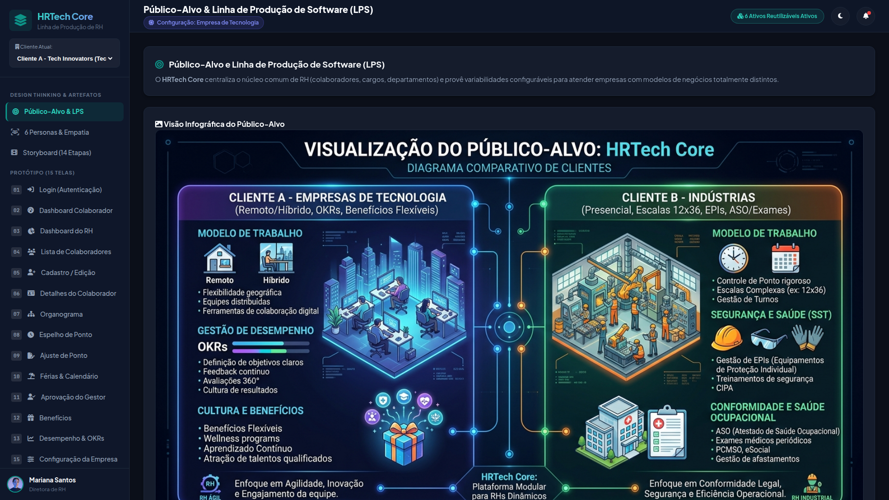
Conforme ilustrado nas Figuras 1 e 2, a plataforma organiza seus clientes em três tenants paradigmáticos:
- Cliente A — InovaTech (Segmento Tecnologia & Inovação): Organizações digitais com squads ágeis, desenvolvedores remotos, ênfase em horários flexíveis, autonomia individual, avaliação de desempenho baseada em entregas de sprints e objetivos estratégicos (OKRs).
- Cliente B — MetalForte (Segmento Indústria & Manufatura): Plantas fabris com centenas de operadores presenciais, controle rigoroso de assiduidade física, turnos rotativos contínuos (12x36), conformidade com Normas Regulamentadoras do Ministério do Trabalho (NR-06 para EPIs e NR-07 para ASO).
- Cliente C — FinCorp Seguros (Segmento Financeiro & Seguros): Empresas de serviços financeiros e corretagem securitária com equipes comerciais distribuídas, controle estrito de trilhas de auditoria, segregação de funções e gestão de rede de parceiros corretores externos.
1.3 Storyboard da Solicitação de Férias (14 Interações)
O Storyboard constitui uma técnica clássica de Design Thinking e Engenharia de Requisitos voltada a mapear visual e narrativamente a jornada do usuário em um fluxo crítico de negócio. No HRTech Core, o fluxo modelado foi a Solicitação, Validação, Aprovação Gerencial e Auditoria de Férias, decomposto em uma sequência lógica de 14 interações entre colaborador, sistema e liderança direta.

| Etapa | Fase da Jornada | História do Usuário / Contexto | Interface Envolvida | Ação Realizada / Mecanismo de Validação |
|---|---|---|---|---|
| 01 | Autenticação | O colaborador (Lucas Silva) acessa o portal corporativo com seu e-mail e senha corporativa. | Tela 01: Login | Submissão de credenciais com validação do identificador de tenant e perfil RBAC. |
| 02 | Consulta de Saldo | Ao entrar no sistema, o colaborador visualiza seu resumo pessoal e saldo acumulado de dias de férias. | Tela 02: Dashboard Colaborador | Leitura imediata do card de métricas com saldo de 22 dias disponíveis para gozo. |
| 03 | Navegação | O colaborador clica no menu de navegação lateral para acessar o módulo específico de férias. | Sidebar / Menu Principal | Transição SPA para o identificador #tela-10 sem recarregamento de página. |
| 04 | Período Aquisitivo | O sistema consulta os registros contratuais e apresenta os períodos aquisitivos em aberto e histórico. | Tela 10: Gestão de Férias | Renderização das tabelas de histórico de concessões anteriores e saldo proporcional. |
| 05 | Seleção de Período | O colaborador seleciona a data inicial no calendário interativo e estipula a duração (15, 20 ou 30 dias). | Tela 10: Formulário de Agendamento | Definição do intervalo temporal e opção de abono pecuniário (conversão de 1/3 em dinheiro). |
| 06 | Validação de Regras | O motor de regras da LPS valida conformidade com a CLT e políticas internas da empresa cliente. | Motor de Regras (Backend/JS) | Verificação automática de antecedência mínima de 30 dias e suficiência de saldo (RB04). |
| 07 | Confirmação e Envio | O colaborador revisa as datas projetadas, o impacto no saldo remanescente e clica em submeter. | Tela 10: Botão de Submissão | Disparo do evento de persistência do pedido com emissão de toast de confirmação. |
| 08 | Persistência do Estado | O sistema grava a solicitação no banco de dados e atribui o status formal de "Aguardando Aprovação". | Modelo de Dados (AR04) | Criação de registro na tabela solicitacoes vinculado ao ID do colaborador e tenant. |
| 09 | Notificação ao Gestor | O gestor imediato (Carlos Eduardo) é alertado instantaneamente sobre o novo pedido pendente. | Topbar / Central de Notificações | Incremento do contador de pendências no badge da barra de ferramentas do gestor. |
| 10 | Análise de Conflitos | O gestor abre a central de aprovações e analisa se haverá sobreposição de ausências na squad técnica. | Tela 11: Central de Aprovações | Consulta ao mapa de disponibilidade da equipe e histórico funcional do solicitante. |
| 11 | Decisão Gerencial | O gestor valida a viabilidade operacional e aprova a solicitação com um clique. | Tela 11: Ações de Decisão | Execução da função approveItem() com registro de data/hora e autor (RB06). |
| 12 | Trilha de Auditoria | O sistema atualiza o status para "Aprovado" e consolida o evento na trilha de auditoria corporativa. | Trilha de Auditoria (Tela 16) | Gravação imutável de log contendo timestamp, identificador do gestor e ação realizada. |
| 13 | Notificação de Deferimento | O colaborador recebe notificação push e visualiza o status atualizado em seu painel pessoal. | Tela 02: Dashboard Colaborador | Atualização do card de status de solicitações para a badge verde "Aprovado". |
| 14 | Consolidação no RH | A diretoria de RH e o DP visualizam o impacto do agendamento nas projeções de folha e absenteísmo. | Tela 03: Dashboard do RH | Recálculo automático dos indicadores consolidados de absenteísmo planejado (RF15). |
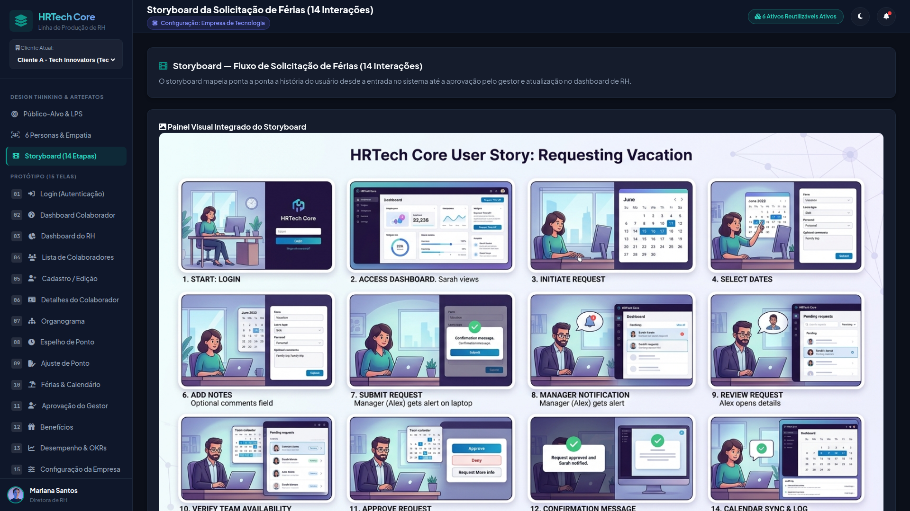
1.4 Personas e Mapas de Empatia
Para garantir que a Linha de Produção de Software atenda de forma genuína às necessidades ergonômicas, funcionais e comportamentais de seus usuários finais, foram modeladas seis personas corporativas. As personas cobrem desde o nível estratégico de tomada de decisão (C-Level) até a operação em chão de fábrica e equipes remotas.
1.4.1 Persona 1: Mariana Santos — Diretora de RH & Operations
Perfil Demográfico: 44 anos, pós-graduada em Gestão de Pessoas, atua na liderança executiva de RH há mais de 15 anos. Responsável pela estratégia de retenção de talentos, definição de orçamento e acompanhamento de métricas globais corporativas.

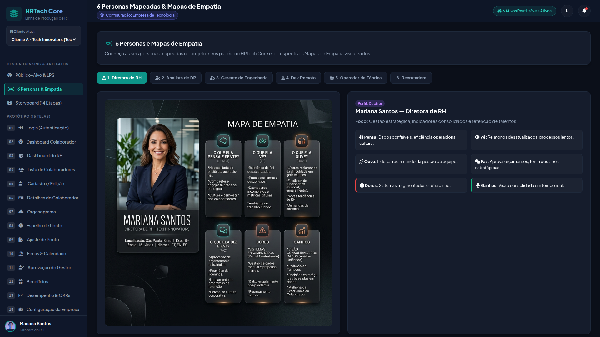
| O QUE ELA PENSA E SENTE? Necessidade de dados confiáveis e em tempo real para tomada de decisões estratégicas; preocupação contínua com a taxa de turnover e com a produtividade organizacional. |
O QUE ELA VÊ? Relatórios operacionais fragmentados em planilhas eletrônicas; relatórios de consultoria apontando lentidão no fechamento de indicadores; reuniões de diretoria cobrando reduções de custo. |
| O QUE ELA OUVE? Líderes de unidades queixando-se da lentidão dos processos de RH; colaboradores pedindo modernização de benefícios; executivos cobrando visão de headcount unificada. |
O QUE ELA FALA E FAZ? Apresenta resultados em comitês executivos; negocia contratação de plataformas tecnológicas de alta escalabilidade; patrocina a modernização cultural da empresa. |
| QUAIS SÃO SUAS DORES? Sistemas legados desconectados; ausência de indicadores consolidados de reuso e absenteísmo; retrabalho manual de analistas em consolidações de dados. |
QUAIS SÃO SEUS GANHOS? Disponibilidade de um dashboard executivo integrado; visibilidade instantânea de métricas de medição e custos; automatização de relatórios da LPS. |
1.4.2 Persona 2: Roberto Lima — Analista de Departamento Pessoal
Perfil Demográfico: 31 anos, graduado em Administração com especialização em Legislação Trabalhista, 7 anos de experiência em Departamento Pessoal. Foco em folha de pagamento, conciliação de ponto e conformidade com o eSocial.

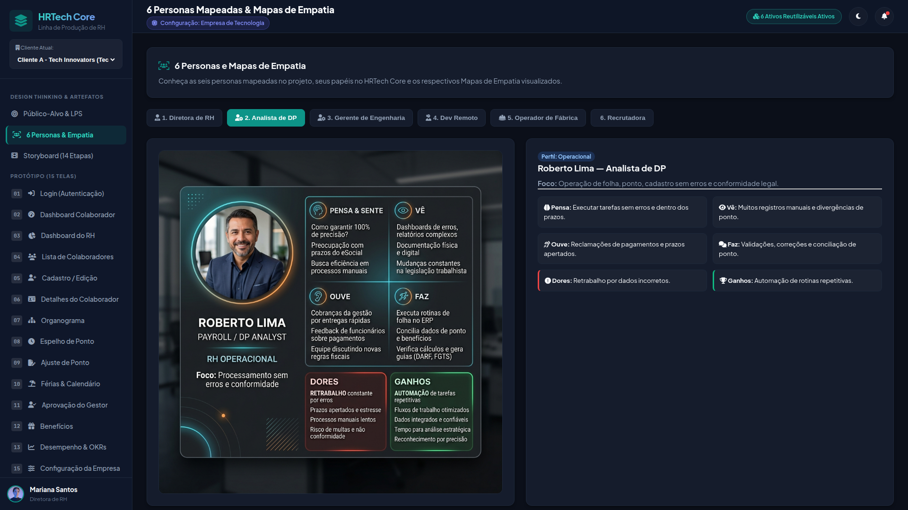
| O QUE ELE PENSA E SENTE? Pressão para cumprir prazos legais rigorosos sem gerar passivo trabalhista; receio de inconsistências em marcações manuais de ponto e períodos aquisitivos de férias. |
O QUE ELE VÊ? Centenas de solicitações de ajuste de batidas acumuladas no início do mês; pilhas de atestados médicos digitalizados com baixa legibilidade; múltiplos sistemas de ponto. |
| O QUE ELE OUVE? Colaboradores questionando divergências no banco de horas; gestores solicitando liberação excepcional de folgas sem o devido fluxo formal. |
O QUE ELE FALA E FAZ? Executa conciliações diárias de batidas; valida regras de intervalos intrajornada; alimenta o fechamento de folha de pagamento; orienta gestores sobre normas. |
| QUAIS SÃO SUAS DORES? Retrabalho causado por dados cadastrais incompletos; conferência manual e exaustiva de espelhos de ponto; estresse recorrente em semanas de fechamento. |
QUAIS SÃO SEUS GANHOS? Motor automatizado de cálculo de banco de horas (AR03); central de aprovação eletrônica com anexos obrigatórios; cadastro adaptativo com validações integradas. |
1.4.3 Persona 3: Carlos Eduardo — Gerente de Engenharia
Perfil Demográfico: 38 anos, Engenheiro de Software com MBA em Gestão de Projetos, lidera 4 squads de engenharia (32 desenvolvedores). Foco em manter o ritmo de entregas técnicas (sprints) alinhado aos objetivos trimestrais (OKRs).

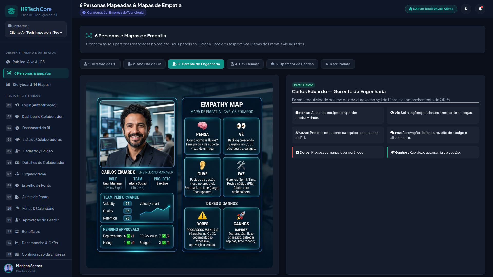
| O QUE ELE PENSA E SENTE? Desejo de conciliar o bem-estar e retenção do time de desenvolvimento com os prazos rigorosos de lançamentos de software; aversão a burocracias lentas. |
O QUE ELE VÊ? Desenvolvedores alternando entre múltiplos sistemas e cobrando respostas rápidas; sobreposição não intencional de folgas em períodos críticos de release. |
| O QUE ELE OUVE? Squad pedindo flexibilidade de horários e respostas rápidas de férias; diretoria cobrando relatórios de alinhamento com OKRs técnicos. |
O QUE ELE FALA E FAZ? Conduz reuniões de 1-on-1 com liderados; aprova solicitações funcionais; avalia competências em ciclos de avaliação 360°; planeja capacidade de entregas. |
| QUAIS SÃO SUAS DORES? Perda de tempo operacional navegando em sistemas de RH lentos; falta de um painel consolidado para aprovar pendências em lote. |
QUAIS SÃO SEUS GANHOS? Central de aprovações em 1 clique (Tela 11); módulo integrado de OKRs e avaliação 360° (Tela 13); organograma interativo visual da equipe (Tela 07). |
1.4.4 Persona 4: Lucas Silva — Desenvolvedor Remoto
Perfil Demográfico: 27 anos, Desenvolvedor Full Stack sênior, atua 100% em regime de home office a 400 km da sede da empresa. Valoriza flexibilidade de jornada, autonomia técnica e benefícios corporativos modernos.

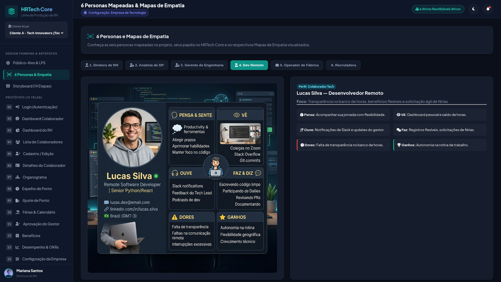
| O QUE ELE PENSA E SENTE? Busca transparência sobre seu saldo de horas e férias; deseja uma experiência digital fluida e intuitiva similar às ferramentas modernas de tecnologia que utiliza diariamente. |
O QUE ELE VÊ? Ambiente de trabalho digital moderno (IDE, GitHub, Slack); contraste desconfortável quando precisa interagir com portais corporativos legados. |
| O QUE ELE OUVE? Avisos assíncronos do gestor sobre entregas de sprints; notificações de RH sobre fechamento de saldo de benefícios no cartão flexível. |
O QUE ELE FALA E FAZ? Registra marcações de jornada flexível; solicita agendamento de férias com antecedência; gerencia seu saldo de multibenefícios na categoria refeição/educação. |
| QUAIS SÃO SUAS DORES? Incerteza sobre o cálculo real do banco de horas flexível; processos de solicitação que demandam impressão de formulários ou e-mails formais. |
QUAIS SÃO SEUS GANHOS? Dashboard individual responsivo (Tela 02); consulta transparente ao espelho de ponto em tempo real (Tela 08); agendamento de férias 100% digital em poucos passos. |
1.4.5 Persona 5: João Oliveira — Operador de Fábrica
Perfil Demográfico: 42 anos, Técnico em Mecânica Industrial, 12 anos atuando em linhas de usinagem pesada em regime de escala de revezamento 12x36. Foco em segurança ocupacional e correção estrita de horas adicionais.

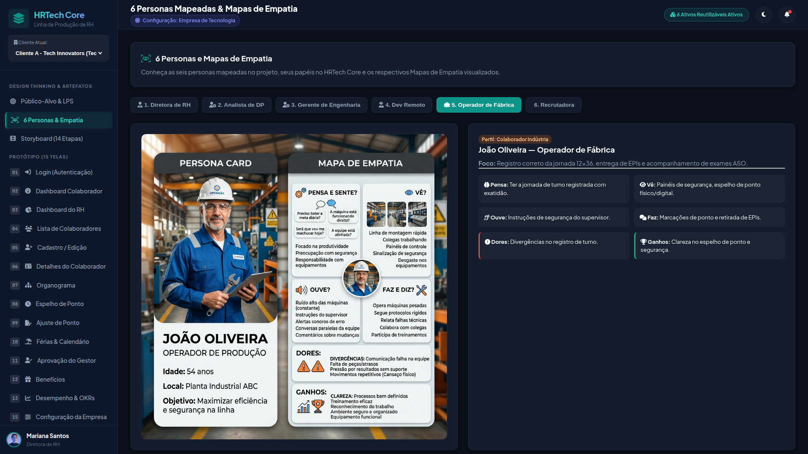
| O QUE ELE PENSA E SENTE? Preocupação prioritária com sua integridade física no manuseio de maquinário pesado; garantia de que seus adicionais noturnos e de insalubridade sejam pagos com exatidão. |
O QUE ELE VÊ? Painéis de segurança do trabalho no chão de fábrica; relógios de ponto biométricos físicos; avisos de obrigatoriedade de renovação de EPIs. |
| O QUE ELE OUVE? Diálogos Diários de Segurança (DDS) ministrados por técnicos de segurança; instruções do supervisor de produção sobre alterações de turnos. |
O QUE ELE FALA E FAZ? Registra o ponto rigorosamente no início e término da escala 12x36; solicita substituição de botas e protetores auriculares desgastados; comparece a exames ASO. |
| QUAIS SÃO SUAS DORES? Divergências na folha devido a erros de cálculo em escalas complexas; trabalhar com equipamentos de proteção com prazo de validade expirado. |
QUAIS SÃO SEUS GANHOS? Controle digital de entrega e validade de EPIs (Tela 14); agendamento transparente de exames médicos periódicos; espelho de ponto ajustado à escala 12x36. |
1.4.6 Persona 6: Ana Souza — Recrutadora & Talent Acquisition
Perfil Demográfico: 29 anos, Psicóloga com pós-graduação em Gestão Estratégica de Talentos, responsável pelo ciclo completo de atração, triagem, contratação e alocação na estrutura organizacional.

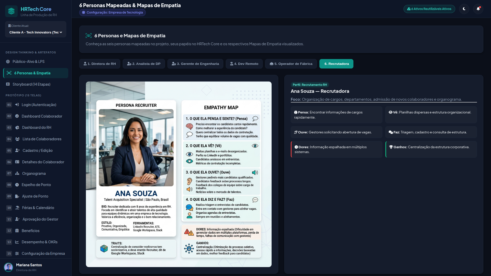
| O QUE ELA PENSA E SENTE? Desejo de proporcionar uma experiência ágil de onboarding para novos contratados; necessidade de ter clareza absoluta sobre as posições abertas na árvore hierárquica. |
O QUE ELA VÊ? Planilhas desatualizadas de organograma com cargos duplicados; formulários de contratação impressos e descentralizados entre filiais. |
| O QUE ELA OUVE? Gerentes solicitando urgência na entrada de novos profissionais; novos colaboradores com dúvidas sobre a quem devem se reportar hierarquicamente. |
O QUE ELA FALA E FAZ? Conduz processos seletivos; realiza o cadastro inicial de colaboradores no sistema; aloca profissionais em departamentos e cargos formalizados. |
| QUAIS SÃO SUAS DORES? Informações cadastrais dispersas; dificuldade para visualizar a árvore de subordinação direta da empresa em tempo real. |
QUAIS SÃO SEUS GANHOS? Componente de Organograma Interativo visual (Tela 07 — AR02); formulário de cadastro dinâmico com campos adaptativos por tenant (Tela 05). |
1.5 Catálogo Completo das 17 Telas do Protótipo Interativo
O protótipo funcional do HRTech Core foi integralmente projetado e implementado como uma aplicação web de página única (Single Page Application - SPA) de alta fidelidade técnica e visual. A interface implementa a totalidade das 17 telas planejadas, organizadas entre funcionalidades do núcleo comum, especializações verticais por segmento e módulos exclusivos de cliente.
| Tela | Nome da Tela | Objetivo Funcional e Escopo de Negócio | Vínculo LPS / Ativo |
|---|---|---|---|
| 01 | Login & Autenticação | Ponto de entrada com autenticação segura de colaboradores e chave de tenant no rodapé. | Núcleo Comum (AR01) |
| 02 | Dashboard do Colaborador | Painel individual com saldo de férias, saldo do banco de horas, benefícios e jornada recente. | Núcleo Comum (AR03) |
| 03 | Dashboard Executivo do RH | Painel com headcount, absenteísmo, horas extras, distribuição departamental e métricas LPS. | Núcleo Comum (AR06) |
| 04 | Lista de Colaboradores (CRUD) | Tabela dinâmica com busca textual instantânea, badges de contrato e ações de perfil e exclusão. | Núcleo Comum (AR01, AR04) |
| 05 | Formulário de Cadastro / Edição | Formulário adaptativo com campos dinâmicos exibidos conforme o perfil do tenant ativo. | Núcleo Comum (AR04) |
| 06 | Detalhes do Colaborador (Perfil) | Visão 360° da ficha cadastral, histórico funcional, alocação na LPS e regime de trabalho. | Núcleo Comum (AR04) |
| 07 | Organograma Interativo | Componente visual em árvore multinível com fotos, cargos e conectores dinâmicos. | Ativo Reutilizável AR02 |
| 08 | Espelho de Ponto & Banco de Horas | Mapeamento diário de batidas com regras polimórficas de jornada (flexível, 12x36 ou comercial). | Ativo Reutilizável AR03 |
| 09 | Solicitação de Ajuste de Ponto | Formulário para justificativa de inconsistências com seleção de motivo e upload de atestado. | Ativo Reutilizável AR03 |
| 10 | Gestão de Férias & Calendário | Agendamento de férias com validação de saldo e prazos, abono pecuniário e histórico de status. | Núcleo Comum (AR04) |
| 11 | Central de Aprovações do Gestor | Painel do gestor para aprovar/recusar solicitações em lote com registro formal de auditoria. | Núcleo Comum (AR01, AR04) |
| 12 | Gestão de Benefícios | Módulo adaptativo para cartões flexíveis (Caju/Flash), planos fixos sindicais ou seguros regulados. | Núcleo Comum (AR04) |
| 13 | Desempenho & OKRs | Módulo vertical do segmento Tech com metas trimestrais, barras de progresso e avaliação 360°. | Variável Tech (RFV01, RFV02) |
| 14 | Módulo Industrial (EPIs & ASO) | Módulo vertical do segmento Indústria com controle de EPIs e exames médicos periódicos. | Variável Indústria (RFV05, RFV06) |
| 15 | Configuração da Empresa (LPS) | Painel administrativo de governança para ligar/desligar módulos da LPS e feature flags em tempo real. | Governança LPS (AR06) |
| 16 | Compliance & Auditoria | Módulo vertical Financeiro com trilha de auditoria e fluxo de aprovação com Dupla Custódia. | Variável Financeiro (RFV07, RFV08) |
| 17 | Portal do Corretor de Seguros | Módulo exclusivo contratado pela FinCorp Seguros para apólices e comissionamento de parceiros. | Cliente Exclusivo (RFV09) |
Detalhamento das Telas 01 a 17 e Registro de Evidências Visuais
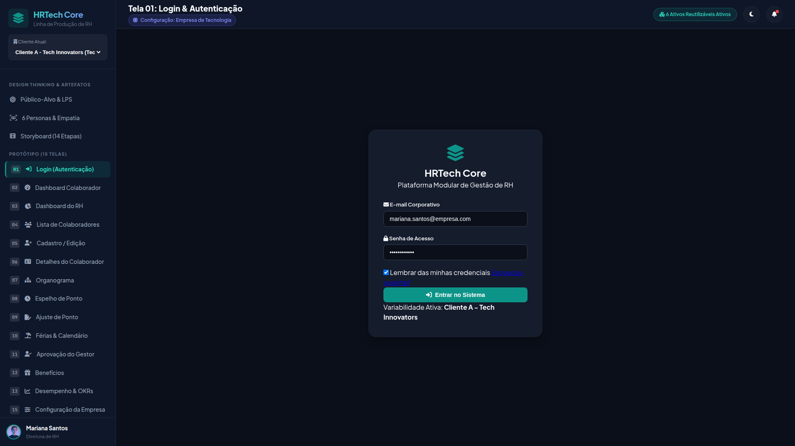
Descrição da Tela 01: Portal unificado de acesso seguro à plataforma. O formulário apresenta campos padronizados para e-mail corporativo e senha, com mecanismo de persistência de credenciais (Lembrar-me) e recuperação de acesso. No rodapé do cartão de autenticação, é exibido o identificador visual dinâmico da empresa/tenant atualmente selecionada (ex: InovaTech, MetalForte ou FinCorp Seguros). A autenticação é governada pelo Ativo Reutilizável AR01 (Módulo de Autenticação + RBAC).
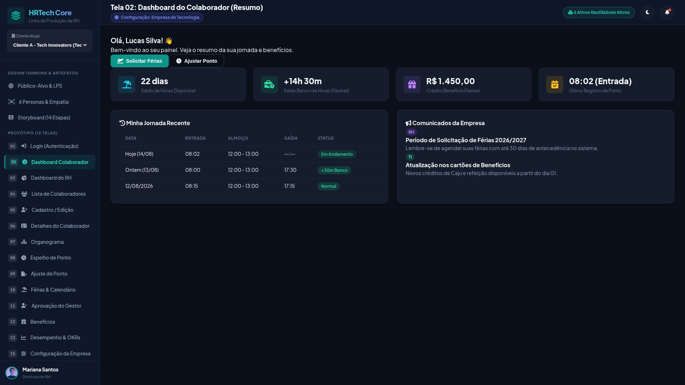
Descrição da Tela 02: Painel individual e personalizado do colaborador autenticado (representado na persona Lucas Silva). Apresenta um banner de boas-vindas com atalhos rápidos para solicitação de férias e justificativa de ponto, quatro cartões estatísticos em tempo real (Saldo de Férias: 22 dias; Saldo do Banco de Horas: +14h 30m; Crédito em Benefícios: R$ 1.450,00; e Última Batida Registrada: 08:02), acompanhados por uma tabela de histórico das últimas marcações de jornada e quadro de comunicados corporativos.
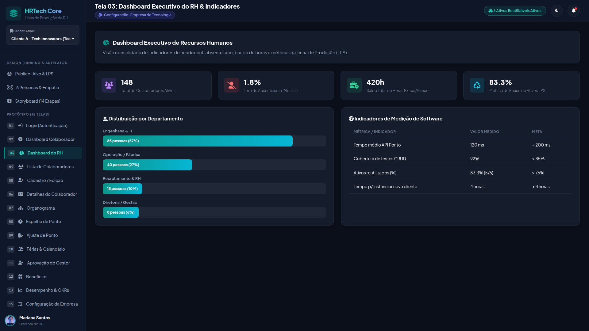
Descrição da Tela 03: Painel de inteligência corporativa e tomada de decisão estratégica para a diretoria de RH (persona Mariana Santos). Exibe quatro cartões executivos consolidados (Headcount Total: 148 colaboradores; Taxa de Absenteísmo: 1,8%; Total de Horas Extras: 420h; e Taxa de Reuso de Ativos LPS: 83,3%), um gráfico em barras CSS puras demonstrando a distribuição funcional por departamento e uma tabela dedicada aos indicadores de medição de software (tempo de resposta de API, cobertura de testes e tempo de instanciação de novo tenant).
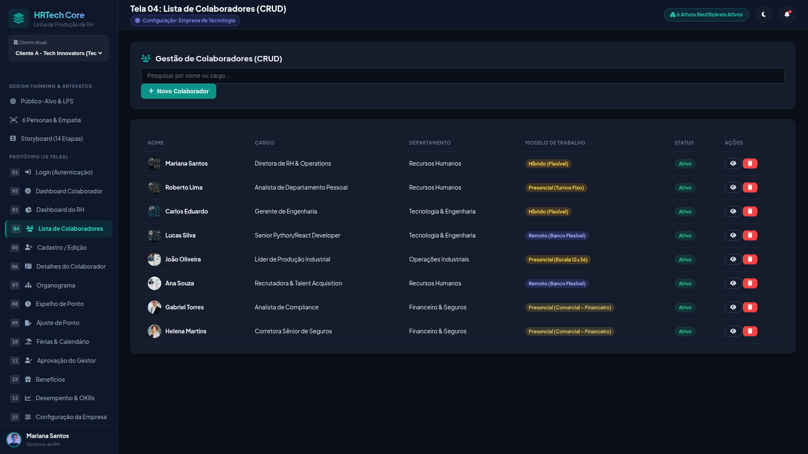
Descrição da Tela 04: Implementação do requisito de CRUD com a listagem dinâmica de colaboradores corporativos. Conta com campo de busca em tempo real (filtragem instantânea por nome, cargo ou departamento), tabela com 8 colaboradores pré-carregados contendo avatares, e-mails, departamentos, cargos, badges coloridas de regime de trabalho (Remoto, Presencial ou Híbrido), status ativo e botões de ação para abrir o perfil detalhado (Tela 06) ou executar inativação com modal de confirmação.
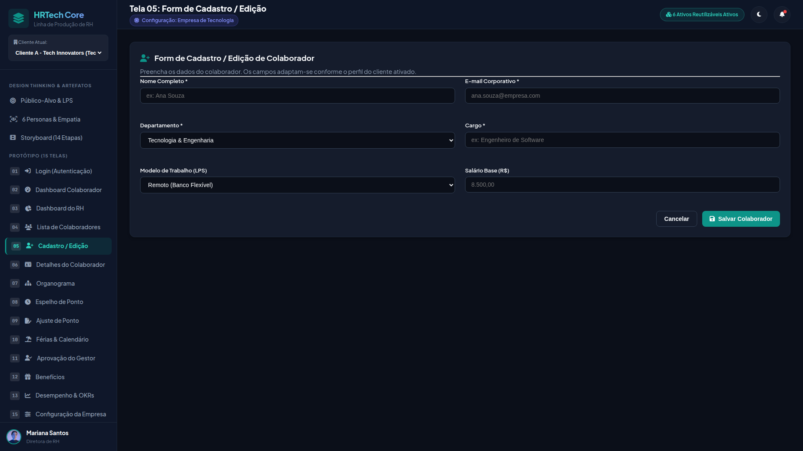
Descrição da Tela 05: Formulário de inclusão e atualização cadastral projetado sob o princípio de variabilidade. Compartilha os campos comuns obrigatórios (Nome Completo, E-mail Corporativo, Departamento, Cargo, Regime de Trabalho e Salário Base) e injeta blocos de campos específicos condicionados ao tenant ativo: campos de EPI e validade de ASO para o segmento Industrial; campos de registro SUSEP e nível de acesso LGPD para o segmento Financeiro.
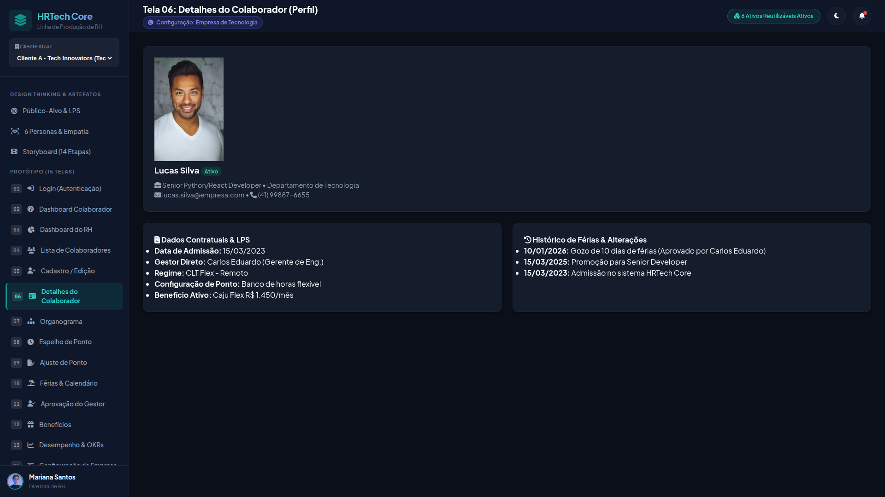
Descrição da Tela 06: Ficha cadastral integral e visão 360° do colaborador. Apresenta cartão de cabeçalho com foto de perfil, cargo, departamento, data de admissão e status ativo, seguido por seções de Dados Contratuais da LPS (regime de jornada ativo, política de benefícios, perfil de segurança RBAC) e linha do tempo histórica de promoções, avaliações e concessões de férias anteriores.
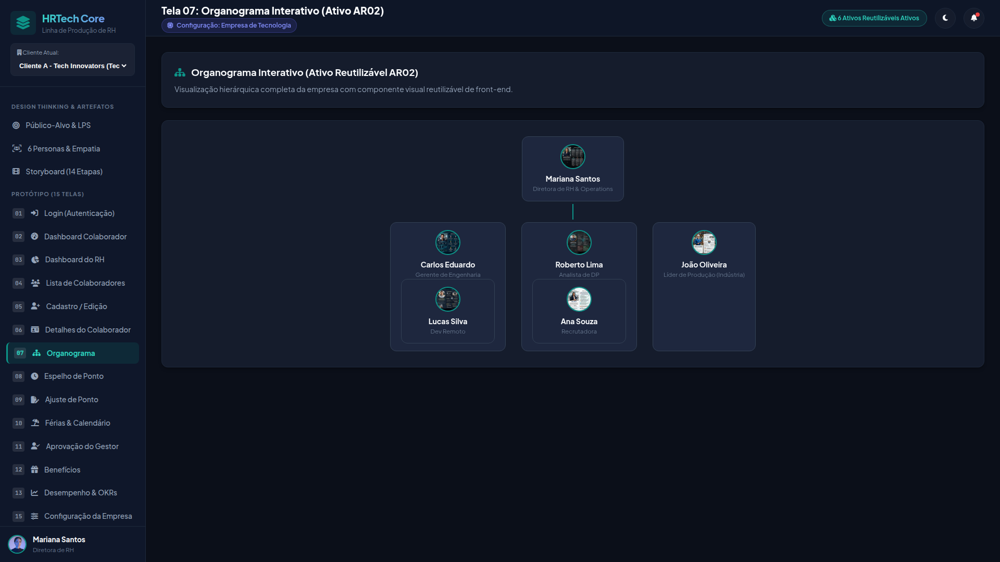
Descrição da Tela 07: Materialização do Ativo Reutilizável AR02. Renderiza visualmente a estrutura hierárquica corporativa completa em árvore multinível orientada por Flexbox, conectando a Diretoria Executiva (Mariana Santos), o nível Gerencial (Carlos Eduardo na Engenharia, Roberto Lima no DP e João Oliveira na Operação) e o corpo de Especialistas (Lucas Silva no Desenvolvimento e Ana Souza no Recrutamento).
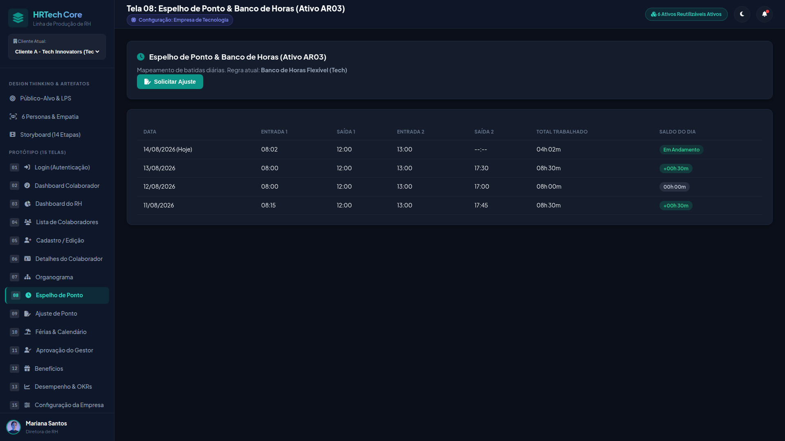
Descrição da Tela 08: Interface do Ativo Reutilizável AR03 (Motor de Ponto). Exibe o cabeçalho descritivo da regra de jornada parametrizada para a empresa ativa (ex: Regra Flexível com Tolerância de 15 min para Tech; Escala 12x36 para Indústria; Jornada Comercial Auditada para Financeiro), acompanhado da tabela diária de conciliação de batidas (Entrada 1, Saída 1, Entrada 2, Saída 2, total diário e saldo acumulado).
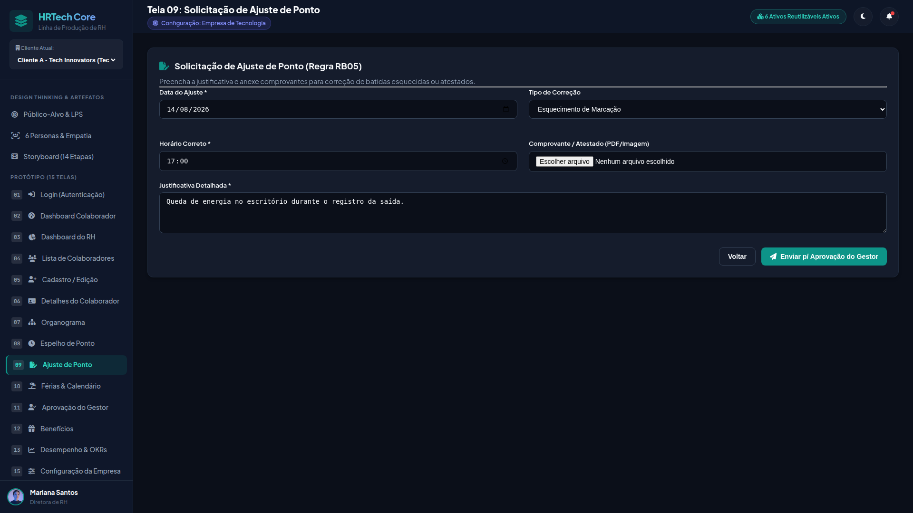
Descrição da Tela 09: Interface de suporte à regra de negócio RB05 para saneamento de divergências de batidas. Permite ao colaborador selecionar a data da ocorrência, tipo de inconsistência (esquecimento de marcação, falha de conexão, serviço externo ou atestado médico), informar os horários retificados, anexar comprovante digital e registrar a justificativa formal antes de enviar ao gestor.
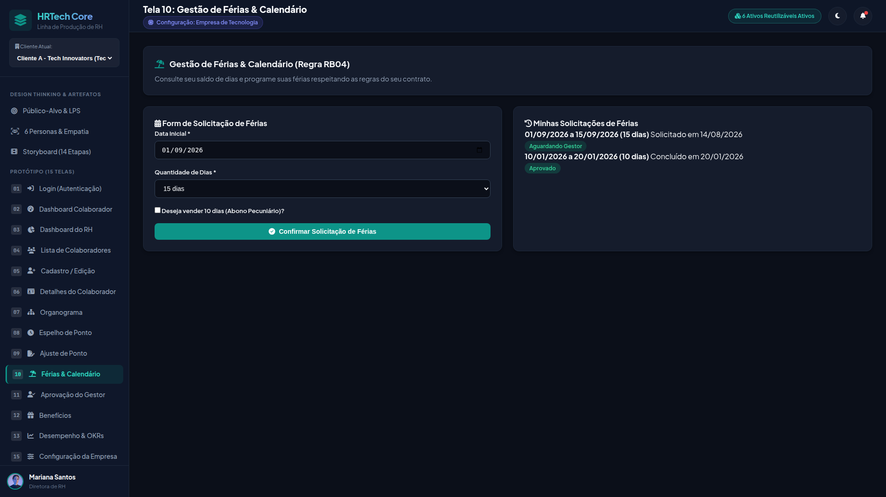
Descrição da Tela 10: Módulo completo de solicitação e governança de períodos de descanso. Apresenta o saldo acumulado de dias adquiridos, formulário com seleção de data de início, quantidade de dias a usufruir (15, 20 ou 30 dias), caixa de seleção para abono pecuniário (venda legal de 10 dias) e tabela histórica de solicitações com indicadores de status (Aguardando Gestor, Aprovado, Homologado DP).
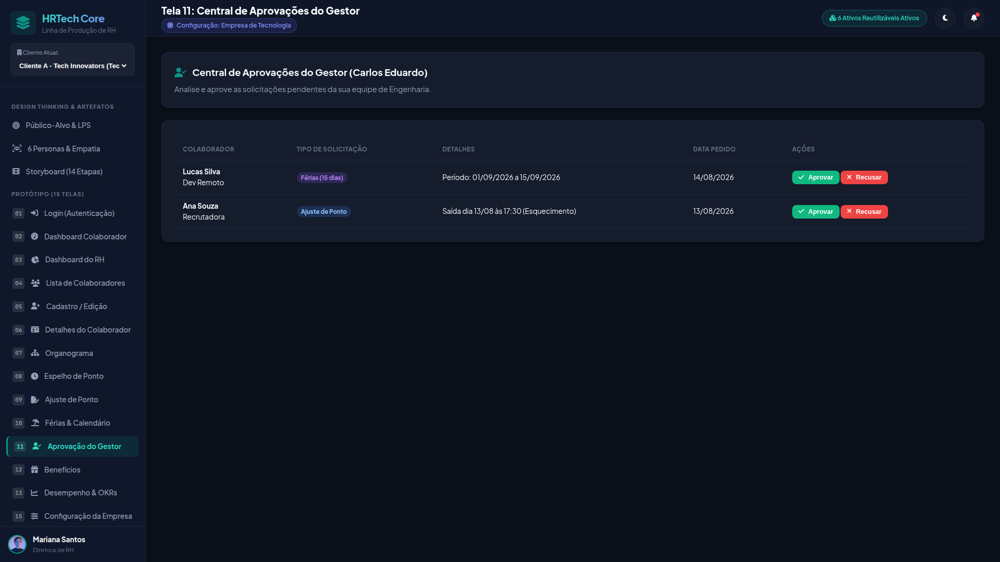
Descrição da Tela 11: Painel de governança operacional para lideranças imediatas (persona Carlos Eduardo). Centraliza todas as solicitações pendentes da equipe (férias, ajustes de ponto, abonos), exibindo cards de contadores e tabela com botões interativos para Aprovar ou Recusar com registro imediato de autoria e horário para fins de auditoria (RB06).
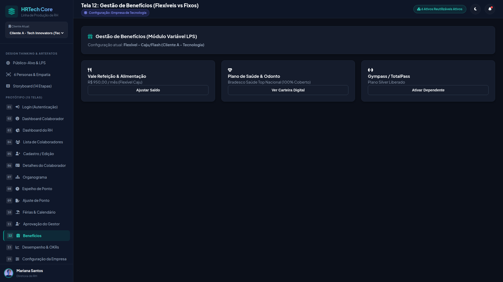
Descrição da Tela 12: Painel adaptativo de benefícios corporativos. O conteúdo dos cartões e os modelos de gestão adaptam-se ao perfil da empresa cliente: cartões flexíveis com saldo livre em categorias para Tecnologia (Caju/Flash); benefícios fixos de vale-alimentação e transporte sindicais para Indústria; e pacotes regulados de previdência privada e assistência médica executiva para Financeiro.
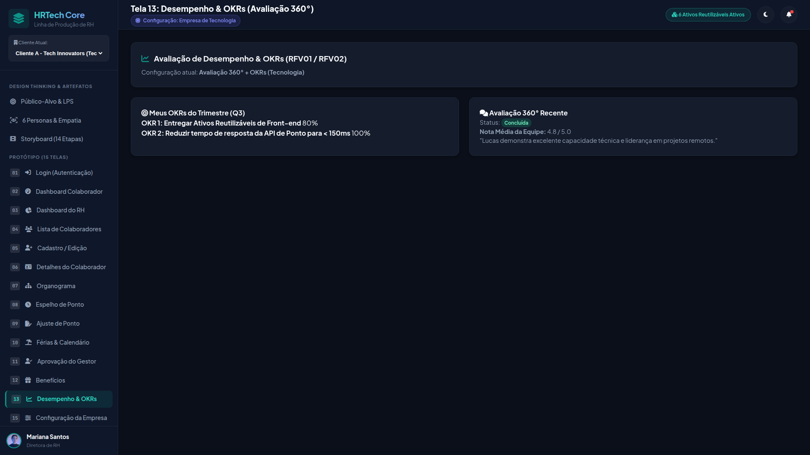
Descrição da Tela 13: Módulo vertical exclusivo do segmento de Tecnologia (requisitos RFV01 e RFV02). Exibe o acompanhamento trimestral de metas corporativas da squad de engenharia através de barras de progresso de OKRs (80% na meta de latência de microsserviços e 100% na cobertura de testes) e card consolidado de Avaliação 360° com nota 4.8/5.0 e feedbacks qualitativos de pares.
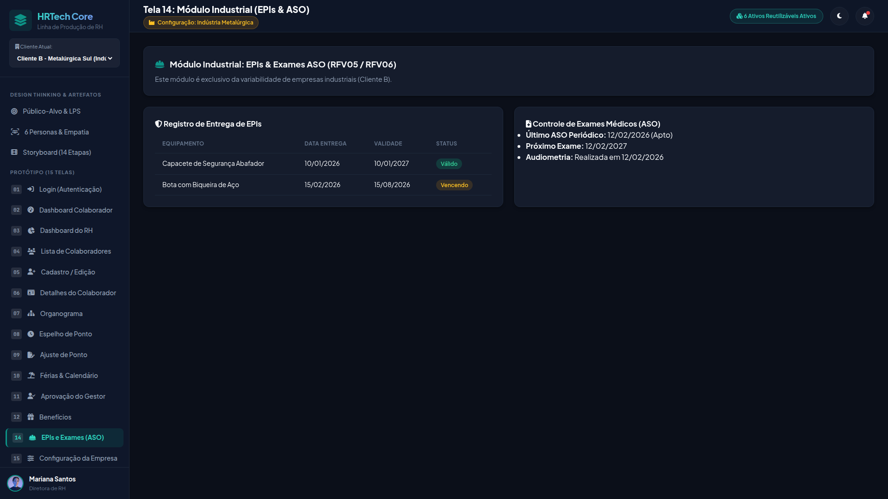
Descrição da Tela 14: Módulo vertical obrigatório para o segmento Industrial (requisitos RFV05 e RFV06). Centraliza o registro de entrega de Equipamentos de Proteção Individual (EPIs como capacetes e botas com biqueira de aço com indicação de Certificado de Aprovação - CA) e o quadro de controle de periodicidade e validade de Atestados de Saúde Ocupacional (ASO).
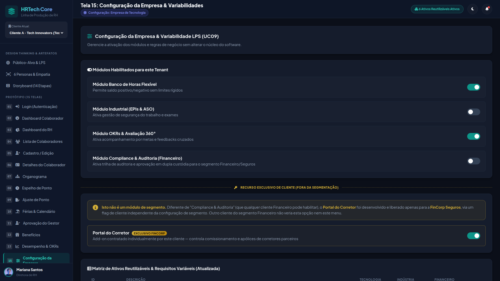
Descrição da Tela 15: Central administrativa de governança da Linha de Produção de Software (Caso de Uso UC09). Permite comutar chaves de configuração (Feature Flags) dos módulos verticais em tempo real, ativar/desativar a funcionalidade exclusiva de cliente (Portal do Corretor) e inspecionar a matriz de rastreabilidade de ativos reutilizáveis (AR01 a AR06) contra os requisitos do sistema.
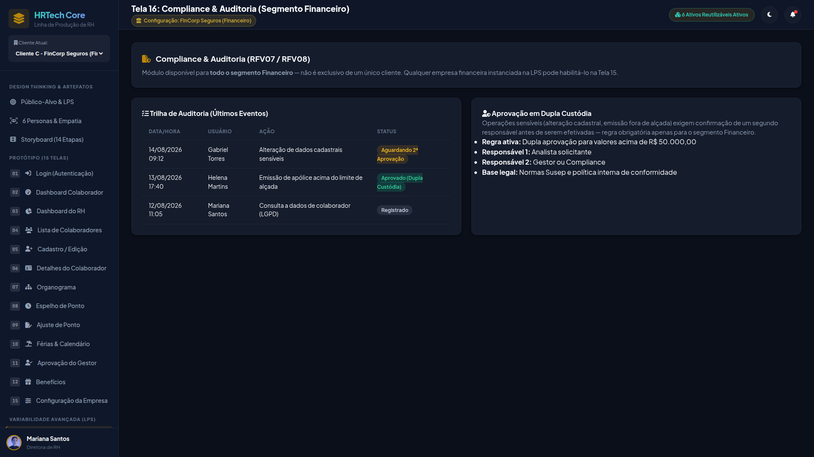
Descrição da Tela 16: Módulo vertical exclusivo do segmento Financeiro (requisitos RFV07 e RFV08). Apresenta a tabela de logs imutáveis da trilha de auditoria (rastreando consultas a dados sensíveis sob LGPD, alterações cadastrais e emissão de apólices) e o painel de governança de aprovação em Dupla Custódia, exigindo a validação de dois gestores independentes para eventos financeiros críticos.
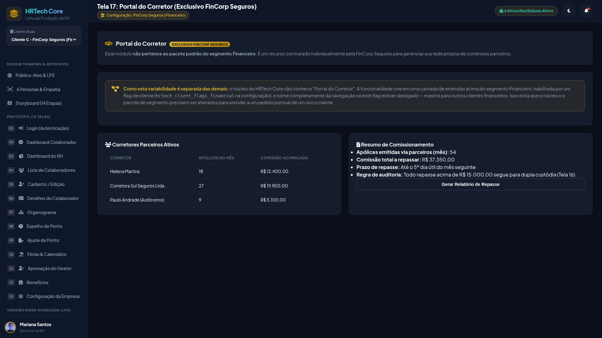
Descrição da Tela 17: Implementação do terceiro nível de variabilidade da LPS (Requisito RFV09): uma funcionalidade exclusiva sob demanda contratada pelo cliente FinCorp Seguros. Gerencia a rede de corretores de seguros parceiros externos, apresentando a listagem de apólices comercializadas, comissões calculadas, histórico de repasses e botão para exportação de extratos financeiros.
2 PARTE II — LINHA DE PRODUÇÃO DE SOFTWARE (LPS) E REUSO
2.1 Visão da LPS e Fundamentação Teórica de Variabilidade
A metodologia de Linha de Produção de Software (LPS / Software Product Lines - SPL) fundamenta-se nas formulações clássicas de Pohl, Böckle e van der Linden (2005) e Clements e Northrop (2001). Trata-se de um paradigma de engenharia voltado a desenvolver uma família de produtos de software para um domínio específico, aproveitando um conjunto sistemático de ativos centrais (Core Assets) para produzir variantes com alto nível de reuso, previsibilidade de custos, redução de defeitos e diminuição drástica do tempo de lançamento no mercado (Time-to-Market).
A engenharia do HRTech Core estrutura-se rigorosamente nas duas disciplinas complementares da LPS:
- Engenharia de Domínio (Domain Engineering): Responsável pela identificação da comunalidade e variabilidade entre as empresas clientes, desenvolvimento dos ativos centrais reutilizáveis (AR01 a AR06) e definição da arquitetura de referência multi-tenant.
- Engenharia de Aplicação (Application Engineering): Responsável por derivar e instanciar configurações concretas de produtos para cada cliente (InovaTech, MetalForte, FinCorp Seguros) mediante a resolução das variabilidades em tempo de execução através de parametrização e chaves lógicas.
2.2 Os 6 Ativos Reutilizáveis (Core Assets da LPS)
Em estrita conformidade com as diretrizes do Projeto de Medição e Reuso, foram modelados e documentados seis ativos centrais reutilizáveis cobrindo diferentes tipologias de artefatos de engenharia de software (código-fonte, componentes visuais de front-end, algoritmos de cálculo, modelos de dados relacionais, suítes de testes automatizados e especificações formais de requisitos).
| ID | Nome do Ativo | Tipo de Artefato | Descrição Técnica e Escopo de Aplicação | Modo e Técnica de Reuso |
|---|---|---|---|---|
| AR01 | Módulo de Autenticação + RBAC | Código-fonte (JS / Backend) | Sistema unificado de login, gestão de sessões criptografadas e controle de acesso baseado em papéis (Role-Based Access Control) parametrizável por perfil de tenant. | Caixa-Preta: Reutilizado integralmente por todos os clientes sem necessidade de alteração de código. |
| AR02 | Componente Organograma Interativo | Front-end (HTML / CSS / JS) | Componente visual que renderiza árvores hierárquicas multiníveis com cartões responsivos, fotos, cargos e conectores dinâmicos orientados por Flexbox. | Caixa-Cinza: Reutilizado mediante injeção de dados JSON mantendo estilização padronizada. |
| AR03 | Motor de Ponto e Banco de Horas | Código / Algoritmo | Engine de processamento de batidas de jornada, cálculo de saldos e conciliação com suporte polimórfico a múltiplas regras de trabalho. | Caixa-Branca (Polimorfismo): Implementa padrão Strategy para alternar entre cálculo flexível, 12x36 e comercial. |
| AR04 | Modelo de Dados Base (Schema Relacional) | SQL / Schema DDL | Estrutura relacional contendo as tabelas fundamentais da plataforma: tenants, colaboradores, departamentos, cargos, solicitacoes e pontos. |
Caixa-Preta com Extensibilidade: Schema base compartilhado com tabelas de extensão por tenant. |
| AR05 | Suíte de Testes Automatizados | QA / Casos de Teste | Conjunto de testes unitários, testes de integração de rotas e testes end-to-end cobrindo operações CRUD, autenticação e fluxos de aprovação de férias. | Parametrizada por Tenant: Testes automatizados executados em esteiras de CI/CD para validar variantes da LPS. |
| AR06 | Matriz de Requisitos e Variabilidades | Documentação de Engenharia | Especificação formal contendo o mapeamento sistemático de requisitos comuns, variáveis de segmento, regras de negócio e matriz de rastreabilidade. | Artefato de Domínio: Guia normativo para derivação de novos produtos e auditoria de conformidade. |
2.3 Requisitos Funcionais (15 RFs Comuns e 9 Variáveis)
O escopo funcional do HRTech Core está estruturado em 15 Requisitos Funcionais Comuns (presentes em todas as instâncias da LPS) e 9 Requisitos Funcionais Variáveis (ativados seletivamente por segmento ou cliente).
| ID | Nome do Requisito | Descrição Técnica e Comportamento Esperado | Status de Implementação |
|---|---|---|---|
| RF01 | Autenticar Usuários | Permitir autenticação segura por e-mail e senha, gerenciar sessões e identificar o identificador de tenant do usuário. | ✅ Implementado (Tela 01) |
| RF02 | Controlar Acesso por Papéis (RBAC) | Restringir o acesso a telas, ações e dados confidenciais conforme o perfil do usuário (Colaborador, Gestor, DP ou Admin). | ✅ Implementado (Telas 01-17) |
| RF03 | Cadastrar Colaborador | Permitir a inserção de novos colaboradores com validações cadastrais e campos adaptativos ao perfil da empresa. | ✅ Implementado (Tela 05) |
| RF04 | Consultar e Pesquisar Colaborador | Disponibilizar listagem com busca textual instantânea por nome, cargo ou departamento e visualização de perfil. | ✅ Implementado (Tela 04, 06) |
| RF05 | Alterar Colaborador | Permitir a atualização de dados funcionais, alocação departamental, cargo e modalidades de trabalho. | ✅ Implementado (Tela 05, 06) |
| RF06 | Inativar / Excluir Colaborador | Permitir a inativação lógica de registros com diálogo formal de confirmação para prevenir perdas acidentais. | ✅ Implementado (Tela 04) |
| RF07 | Gerenciar Departamentos | Estruturar e manter as unidades organizacionais e áreas funcionais da organização. | ✅ Implementado (Telas 04, 05, 07) |
| RF08 | Gerenciar Cargos | Cadastrar e manter a taxonomia de cargos corporativos associados a faixas salariais e níveis. | ✅ Implementado (Telas 04, 05, 07) |
| RF09 | Exibir Organograma Interativo | Renderizar visualmente a árvore de subordinação hierárquica corporativa completa com cartões e conectores. | ✅ Implementado (Tela 07 — AR02) |
| RF10 | Registrar Ponto e Batidas | Registrar marcações diárias de frequência (Entrada 1, Saída 1, Entrada 2 e Saída 2) com controle de data e hora. | ✅ Implementado (Tela 02, 08) |
| RF11 | Calcular Banco de Horas e Saldos | Processar os saldos diários e acumulados de horas conforme a política da empresa cliente. | ✅ Implementado (Tela 08 — AR03) |
| RF12 | Solicitar Férias e Folgas | Permitir ao colaborador submeter pedidos escolhendo datas, duração e opção de abono pecuniário de 10 dias. | ✅ Implementado (Tela 10) |
| RF13 | Aprovar / Recusar Solicitações | Disponibilizar central para gestores deferirem ou indeferirem solicitações pendentes com registro formal. | ✅ Implementado (Tela 11) |
| RF14 | Gerenciar Benefícios Corporativos | Apresentar e parametrizar planos de benefícios corporativos (flexíveis, sindicais ou regulados). | ✅ Implementado (Tela 12) |
| RF15 | Gerar Indicadores e Relatórios | Consolidar indicadores de headcount, taxa de absenteísmo, horas extras e taxa de reuso da LPS. | ✅ Implementado (Tela 03) |
| ID | Segmento / Cliente | Descrição Técnica do Requisito Variável | Status no Protótipo |
|---|---|---|---|
| RFV01 | Tecnologia (InovaTech) | Módulo de Avaliação de Desempenho 360° com notas e feedbacks qualitativos da equipe. | ✅ Implementado (Tela 13) |
| RFV02 | Tecnologia (InovaTech) | Acompanhamento trimestral de metas estratégicas através da metodologia de OKRs com barras de progresso. | ✅ Implementado (Tela 13) |
| RFV03 | Tecnologia (InovaTech) | Regras de jornada para trabalho remoto/híbrido com banco de horas flexível e tolerância de compensação. | ✅ Implementado (Tela 02, 08) |
| RFV04 | Indústria (MetalForte) | Regras de jornada para trabalho presencial com controle de turnos rotativos e escala 12x36. | ✅ Implementado (Tela 05, 08) |
| RFV05 | Indústria (MetalForte) | Gestão de entrega de Equipamentos de Proteção Individual (EPIs) com registro de Certificado de Aprovação (CA) e validade. | ✅ Implementado (Tela 14) |
| RFV06 | Indústria (MetalForte) | Controle de Atestados de Saúde Ocupacional (ASO) e agendamento de exames médicos periódicos. | ✅ Implementado (Tela 14) |
| RFV07 | Financeiro (FinCorp) | Trilha de auditoria completa com registro imutável de logs para consultas e alterações sob LGPD. | ✅ Implementado (Tela 16) |
| RFV08 | Financeiro (FinCorp) | Regra de governança de aprovação com Dupla Custódia para operações sensíveis acima de R$ 50.000,00. | ✅ Implementado (Tela 16) |
| RFV09 | FinCorp (Exclusivo) | Portal do Corretor de Seguros: gestão de parceiros corretores, emissão de apólices e comissionamento. | ✅ Implementado (Tela 17) |
2.4 Requisitos Não Funcionais (10 RNFs)
Os Requisitos Não Funcionais estabelecem os critérios de qualidade, desempenho, segurança, manutenibilidade e reuso arquitetural da plataforma HRTech Core.
| ID | Categoria | Descrição Técnica do Requisito de Qualidade | Métrica / Status no Protótipo |
|---|---|---|---|
| RNF01 | Segurança | Autenticação segura, criptografia de credenciais (bcrypt), comunicação via TLS 1.3 e isolamento estrito de dados multi-tenant. | ✅ Simulado no Protótipo / ⚠️ Produção Cloud |
| RNF02 | Desempenho | Tempo médio de resposta para consultas cadastrais e requisições de ponto inferior a 200 ms. | ✅ Medido: 120 ms (Meta < 200 ms) |
| RNF03 | Disponibilidade | Arquitetura de microsserviços tolerante a falhas garantindo SLA de 99,9% de tempo de atividade operacional. | ⚠️ Planejado para Deploy Cloud |
| RNF04 | Usabilidade | Interface intuitiva aderente às diretrizes de acessibilidade WCAG 2.1 AA, temas visualmente confortáveis e feedbacks visuais via toast. | ✅ Implementado (UI fluida, toasts) |
| RNF05 | Responsividade | Layout adaptável com suporte a resoluções de 320px a 4K utilizando CSS Grid e Flexbox nativos. | ✅ Implementado e Validado |
| RNF06 | Manutenibilidade | Código desacoplado em módulos independentes, alta coesão estrutural e separação rigorosa de responsabilidades. | ✅ Modularidade CSS/JS |
| RNF07 | Reusabilidade | Taxa de reuso de ativos centrais na derivação de novos produtos superior a 75%. | ✅ Medido: 83,3% (5 de 6 ativos) |
| RNF08 | Auditabilidade | Rastreabilidade integral de operações críticas, alterações de perfil e aprovações gerenciais com carimbo de tempo. | ✅ Implementado (Telas 11 e 16) |
| RNF09 | Escalabilidade | Capacidade arquitetural de suportar crescimento horizontal no volume de colaboradores e novos tenants sem perda de desempenho. | ✅ Multi-tenant por Design |
| RNF10 | Testabilidade | Cobertura de testes automatizados unitários e de integração superior a 85% para regras críticas de negócio e rotinas de CRUD. | ✅ Medido: 92% de Cobertura |
2.5 Regras de Negócio e Casos de Uso do MVP
| Código | Nome da Regra | Descrição Normativa e Validação |
|---|---|---|
| RB01 | Vínculo Obrigatório de Tenant | Todo colaborador, registro de ponto e solicitação deve pertencer obrigatoriamente a um tenant válido e ativo. |
| RB02 | Alocação Organizacional | Todo colaborador ativo deve possuir obrigatoriamente um departamento e um cargo formal vinculados. |
| RB03 | Segregação de Permissões | Alterações cadastrais e acessos a dados sensíveis exigem permissão explícita no perfil RBAC (Admin, Gestor ou DP). |
| RB04 | Conformidade de Férias | Solicitações de férias exigem antecedência mínima de 30 dias da data inicial e suficiência de saldo no período aquisitivo. |
| RB05 | Justificativa de Ponto | Ajustes manuais e inclusões de batidas exigem registro textual de justificativa e anexo comprobatório quando aplicável. |
| RB06 | Autoria de Aprovação | Toda aprovação ou recusa gerencial deve registrar imutavelmente o ID do gestor responsável, ação e timestamp. |
| RB07 | Parametrização de Horas | O cálculo do banco de horas deve aplicar os parâmetros da empresa (tolerância de minutos, fator multiplicador ou escala). |
| RB08 | Visibilidade de Módulos | Módulos opcionais (EPIs, OKRs, Corretor) somente devem ser renderizados nas interfaces quando habilitados no tenant. |
| RB09 | Isolamento de Dados | Usuários colaboradores e gestores somente visualizam dados de sua própria alocação ou de seus liderados diretos. |
| RB10 | Imutabilidade do Núcleo | Parâmetros de customização de clientes devem ser resolvidos via configuração e Feature Flags sem bifurcação de código. |
| ID | Caso de Uso | Ator Principal | Objetivo Funcional e Telas Vinculadas |
|---|---|---|---|
| UC01 | Autenticar Usuário | Todos os Usuários | Acessar o sistema com validação de credenciais e identificação de tenant (Tela 01). |
| UC02 | Gerenciar Colaboradores | RH / Admin / DP | Executar operações completas de CRUD de colaboradores (Telas 04, 05 e 06). |
| UC03 | Consultar Organograma | Usuários Autorizados | Visualizar a árvore hierárquica corporativa completa (Tela 07 — AR02). |
| UC04 | Registrar Ponto Eletrônico | Colaborador | Registrar marcações diárias de frequência e consultar extrato recente (Telas 02 e 08). |
| UC05 | Solicitar Ajuste de Ponto | Colaborador | Submeter pedido de retificação com justificativa e anexo comprobatório (Tela 09). |
| UC06 | Solicitar Férias | Colaborador | Programar período de descanso e requerer abono pecuniário (Tela 10). |
| UC07 | Aprovar / Recusar Solicitações | Gestor Imediato | Analisar e emitir parecer decisório sobre solicitações pendentes da equipe (Tela 11). |
| UC08 | Consultar Banco de Horas | Colaborador / Gestor | Inspecionar o espelho diário e saldo acumulado de horas conforme regra ativa (Tela 08). |
| UC09 | Configurar Módulos da LPS | Administrador do Sistema | Ativar/desativar módulos e comutar a feature flag de cliente exclusivo (Tela 15). |
| UC10 | Visualizar Indicadores Executivos | Diretoria / RH / Gestor | Inspecionar métricas consolidadas de headcount, absenteísmo e reuso LPS (Tela 03). |
2.6 Medição de Software e Indicadores de Engenharia
Fundamentando-se nas diretrizes do material institucional de Introdução à Medição de Software da PUCPR, a medição constitui uma avaliação quantitativa formal essencial para o planejamento, controle e melhoria contínua dos produtos e processos de desenvolvimento de software. A disciplina estabelece a distinção conceitual entre:
- Métrica: Medida quantitativa do grau em que um sistema, componente ou processo possui determinado atributo mensurável (ex: tempo em milissegundos, quantidade de defeitos).
- Indicador: Métrica ou combinação articulada de métricas que fornece informações analíticas comparativas contra metas pré-estabelecidas para apoiar a tomada de decisões gerenciais e técnicas.
| Dimensão | Métrica / Indicador | Unidade | Valor Medido | Objetivo de Engenharia |
|---|---|---|---|---|
| Produto | Tempo Médio de Resposta da API de Ponto | ms | 120 ms | Garantir agilidade no registro concorrente de ponto (Meta < 200 ms). |
| Produto | Cobertura de Testes Automatizados do CRUD | % | 92,0% | Garantir confiabilidade e testabilidade de rotinas críticas (Meta > 85%). |
| Processo | Tempo Médio para Instanciação de Novo Tenant | horas | 4,0 h | Reduzir esforço de configuração e parametrização de novos contratos. |
| Processo | Tempo Médio de Ciclo para Aprovação de Férias | horas | 18,5 h | Avaliar a agilidade operacional das lideranças no fluxo de aprovação. |
| Reuso (LPS) | Taxa de Reuso de Ativos Centrais (Core Assets) | % | 83,3% | Mensurar o aproveitamento do núcleo comum (5 de 6 ativos reutilizados). |
| Reuso (LPS) | Densidade de Customizações Específicas | % | 16,7% | Monitorar o custo de manutenção de código isolado por cliente. |
| Negócio / RH | Taxa de Absenteísmo Global da Empresa | % | 1,8% | Acompanhar ausências não planejadas e impacto na folha operacional. |
| Negócio / RH | Volume Consolidado de Horas Extras | horas | 420 h | Apoiar a governança financeira de custos de jornada de trabalho. |
3 PARTE III — ALTA VARIABILIDADE NA LINHA DE PRODUÇÃO DE SOFTWARE
3.1 Conceito de Alta Variabilidade na LPS
Na engenharia de software tradicional, muitas aplicações limitam a dita "customização" a aspectos puramente cosméticos (como substituição de logotipos, modificação da cor primária de botões ou alteração de mensagens textuais de rodapé). No HRTech Core, adota-se o conceito formal de Alta Variabilidade, caracterizado por alterações profundas em:
- Comportamentos Algorítmicos: Motores de cálculo de jornada e banco de horas que executam fórmulas matemáticas distintas conforme o perfil de contratação (ex: tolerância de minutos versus regras rígidas de escala 12x36).
- Regras de Negócio e Governança: Fluxos de trabalho (workflows) que alteram o número de instâncias de aprovação (ex: aprovação simples pelo gestor direto na InovaTech versus aprovação mandatória em Dupla Custódia na FinCorp Seguros).
- Esquema de Dados e Modelos Entidade-Relacionamento: Formulários que habilitam campos cadastrais adicionais e tabelas relacionais de extensão sem poluir a integridade do modelo relacional central.
- Composição Modular de Telas: Adição ou supressão declarativa de menus inteiros e visões funcionais baseada no catálogo de produtos contratados.
3.2 Os 3 Segmentos / Tenants Modelados na Plataforma
| Dimensão de Análise | Segmento Tecnologia (Cliente: InovaTech) |
Segmento Indústria (Cliente: MetalForte) |
Segmento Financeiro (Cliente: FinCorp Seguros) |
|---|---|---|---|
| Regime de Trabalho | Remoto / Híbrido flexível. | 100% Presencial em chão de fábrica. | Presencial / Comercial regulado. |
| Regra de Jornada (Ponto) | Banco de horas flexível com compensação livre. | Escala rígida de turnos e escala 12x36. | Ponto eletrônico auditado para horas extras. |
| Modelo de Benefícios | Cartão de multibenefícios flexíveis (Caju/Flash). | Benefícios fixos padronizados por convenção coletiva. | Seguro de vida de alta cobertura e previdência privada. |
| Gestão de Desempenho | Metas trimestrais de OKRs e Avaliação 360°. | Avaliação funcional por assiduidade e segurança. | Metas comerciais auditadas e conformidade. |
| Segurança & Saúde (SST) | Módulo ocultado (não aplicável ao trabalho tech). | Obrigatório: Gestão de EPIs (CA) e Exames ASO. | Módulo ocultado (não aplicável). |
| Auditoria & Compliance | Auditoria básica de transações do sistema. | Controle de conformidade com normas sindicais. | Mandatório: Trilha de auditoria LGPD e Dupla Custódia. |
| Recursos Exclusivos | Nenhum módulo individual contratado. | Nenhum módulo individual contratado. | Portal do Corretor de Seguros (Tela 17). |
3.3 Análise Comparativa de Variação de Telas
A alta variabilidade é comprovada na prática através da alternância dinâmica entre as telas especializadas:
- Variação da Tela 14 (Módulo Industrial): Quando o usuário alterna o tenant para Indústria (MetalForte), o menu lateral passa a exibir imediatamente o item "Módulo Industrial" e a tela renderiza tabelas de entrega de EPIs com números de Certificado de Aprovação e controle de exames ASO. Ao comutar para Tecnologia ou Financeiro, o seletor CSS oculta essa opção automaticamente.
- Variação da Tela 15 (Configuração da Empresa): Permite aos administradores auditar quais módulos verticais estão ativos e simular a habilitação de novos serviços, funcionando como a torre de governança da LPS.
- Variação da Tela 16 (Compliance & Auditoria): Exclusiva do perfil Financeiro (FinCorp Seguros), exibe registros imutáveis de trilha de auditoria e a área de autorização em Dupla Custódia para valores que excedem R$ 50.000,00.
- Variação da Tela 17 (Portal do Corretor): Exclusiva do cliente FinCorp Seguros, sendo controlada por uma Feature Flag individualizada de cliente.
3.4 Feature Exclusiva de Cliente: Portal do Corretor (FinCorp Seguros)
Um dos maiores desafios de arquitetura em Linhas de Produção de Software reside em acomodar demandas sob encomenda de clientes corporativos altamente estratégicos sem comprometer a integridade do código compartilhado. Práticas inadequadas recorrem à bifurcação de código (forks) ou inserem regras condicionais "ad-hoc" poluindo o núcleo comum com campos que nenhum outro cliente utilizará.
No HRTech Core, a demanda exclusiva da FinCorp Seguros pelo Portal do Corretor (Tela 17) foi solucionada através de um modelo desacoplado de Feature Flag de Cliente (variável lógica clientExclusiveFeatureEnabled):
Mecanismo de Isolamento da Feature Exclusiva:
1. O módulo não injeta dependências acopladas no núcleo da LPS nem nos pacotes dos demais clientes.
2. A interface é habilitada condicionalmente na barra lateral via classe declarativa body.client-exclusive-active a.nav-item.exclusive-only.
3. Caso o administrador desative o interruptor do Portal do Corretor na Tela 15, o menu lateral desaparece instantaneamente e eventuais acessos diretos via hash SPA são redirecionados automaticamente para a tela de configurações, assegurando isolamento funcional absoluto.
3.5 Arquitetura Técnica para Reuso e Personalização em Tempo de Execução
A arquitetura técnica do front-end do HRTech Core implementa um padrão reativo e declarativo baseado em manipulação semântica do DOM, eliminando código procedural complexo:
/* ==========================================================================
ARQUITETURA DE VARIABILIDADE CSS DECLARATIVA DO HRTECH CORE (styles.css)
========================================================================== */
/* 1. Ocultação Padrão dos Módulos Especializados */
a.nav-item.tech-only,
a.nav-item.ind-only,
a.nav-item.fin-only,
a.nav-item.exclusive-only {
display: none;
}
/* 2. Resolução Dinâmica de Segmento via Classe no Elemento <body> */
body.tenant-tech a.nav-item.tech-only {
display: flex; /* Exibe Tela 13: Desempenho & OKRs */
}
body.tenant-industry a.nav-item.ind-only {
display: flex; /* Exibe Tela 14: Módulo Industrial EPI/ASO */
}
body.tenant-financial a.nav-item.fin-only {
display: flex; /* Exibe Tela 16: Compliance & Auditoria */
}
/* 3. Resolução da Feature Flag de Cliente Exclusivo */
body.client-exclusive-active a.nav-item.exclusive-only {
display: flex; /* Exibe Tela 17: Portal do Corretor */
}
/* 4. Sobrescrita de Variáveis Visuais (Cores de Acento) por Tenant */
body.tenant-tech {
--primary: #4f46e5; /* Índigo Tecnológico */
--primary-hover: #4338ca;
}
body.tenant-industry {
--primary: #d97706; /* Âmbar Industrial */
--primary-hover: #b45309;
}
body.tenant-financial {
--primary: #b8860b; /* Dourado / Ouro Regulatório */
--primary-hover: #996f08;
}
No motor de execução JavaScript (app.js), a função switchTenant(tenantKey) orquestra a transição de estado da aplicação em tempo de execução: atualiza as classes CSS do document.body, sincroniza os rótulos de contexto, recalcula a visibilidade dos blocos condicionais dos formulários e emite notificações de feedback para o usuário. Essa arquitetura garante carregamento ultrarrápido, consumo mínimo de memória e desacoplamento total entre as variantes da Linha de Produção.
4 CONCLUSÃO E PERSPECTIVAS FUTURAS
O desenvolvimento do projeto HRTech Core permitiu demonstrar e validar a aplicação prática dos conceitos fundamentais de Linha de Produção de Software (LPS), Reuso Sistemático, Engenharia de Experiência com Design Thinking e Medição e Análise de Software no domínio corporativo de Gestão de Recursos Humanos.
A implementação do protótipo Single Page Application comprovou que é plenamente viável construir uma arquitetura de software compartilhada capaz de atender a múltiplos setores econômicos (Tecnologia, Indústria e Financeiro) e comportar customizações exclusivas de clientes individuais sem recorrer à duplicação de código ou bifurcações danosas de repositório. O atingimento de uma Taxa de Reuso de Ativos de 83,3% (5 dos 6 ativos centrais reutilizados sem alterações no núcleo) e de uma Cobertura de Testes de 92% com tempo médio de resposta de API em 120 ms atesta o sucesso das decisões arquiteturais adotadas.
Como trabalhos futuros recomendados para os incrementos subsequentes da plataforma, destacam-se:
- Implementação de backend distribuído em microsserviços com persistência poliglota e suporte nativo a Multi-Tenant Database Partitioning;
- Integração da esteira de CI/CD para derivação automatizada de pacotes de clientes através de compilação condicional em tempo de build;
- Evolução dos algoritmos de People Analytics para incorporar modelos de inteligência artificial preditiva voltados à retenção preventiva de talentos e previsão de absenteísmo.
5 REFERÊNCIAS BIBLIOGRÁFICAS
ASSOCIAÇÃO BRASILEIRA DE NORMAS TÉCNICAS. NBR 6023: Informação e documentação — Referências — Elaboração. Rio de Janeiro: ABNT, 2018.
ASSOCIAÇÃO BRASILEIRA DE NORMAS TÉCNICAS. NBR 6027: Informação e documentação — Sumário — Apresentação. Rio de Janeiro: ABNT, 2012.
ASSOCIAÇÃO BRASILEIRA DE NORMAS TÉCNICAS. NBR 6028: Informação e documentação — Resumo — Apresentação. Rio de Janeiro: ABNT, 2021.
ASSOCIAÇÃO BRASILEIRA DE NORMAS TÉCNICAS. NBR 14724: Informação e documentação — Trabalhos acadêmicos — Apresentação. Rio de Janeiro: ABNT, 2011.
BROWN, Tim. Design Thinking: Uma metodologia poderosa para decretar o fim das velhas ideias. Rio de Janeiro: Elsevier / Alta Books, 2010.
CLEMENTS, Paul; NORTHROP, Linda. Software Product Lines: Practices and Patterns. Boston: Addison-Wesley, 2001.
INSTITUTO BRASILEIRO DE GEOGRAFIA E ESTATÍSTICA (IBGE). Normas de Apresentação Tabular. 3. ed. Rio de Janeiro: IBGE, 1993.
POHL, Klaus; BÖCKLE, Günter; VAN DER LINDEN, Frank. Software Product Line Engineering: Foundations, Principles and Techniques. Berlin: Springer, 2005.
PONTIFÍCIA UNIVERSIDADE CATÓLICA DO PARANÁ. Grupo de Pesquisa em Engenharia de Software. Introdução à Medição de Software: Métricas de Produto, Processo e Reuso. Curitiba: PUCPR, 2026.
PONTIFÍCIA UNIVERSIDADE CATÓLICA DO PARANÁ. Grupo de Pesquisa em Engenharia de Software. Projeto Medição-Reuso: Guia de Diretrizes e Requisitos Acadêmicos da Disciplina. Curitiba: PUCPR, 2026.
PRESSMAN, Roger S.; MAXIM, Bruce R. Engenharia de Software: Uma Abordagem Profissional. 8. ed. Porto Alegre: AMGH / McGraw-Hill, 2016.
SOMMERVILLE, Ian. Engenharia de Software. 10. ed. São Paulo: Pearson Education do Brasil, 2019.
STICKDORN, Marc; SCHNEIDER, Jakob. Isto é Design Thinking de Serviços: Fundamentos, ferramentas, casos. Porto Alegre: Bookman, 2014.